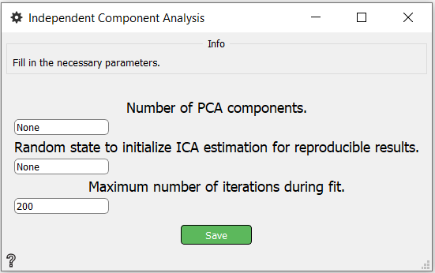

Independent Component Analysis
M/EEG signal decomposition using Independent Component Analysis (ICA).
Inputs
Outputs
- ICA: Object of Independent Component Analysis
Use

- Number of PCA components - Controls the number of PCA components from the pre-ICA PCA entering the ICA decomposition in the ICA.fit() method
- Random state to initialize ICA estimation for representativ results.
- Maximum number of iterations during fit.